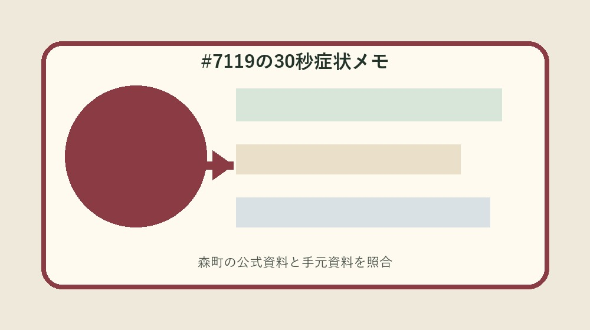
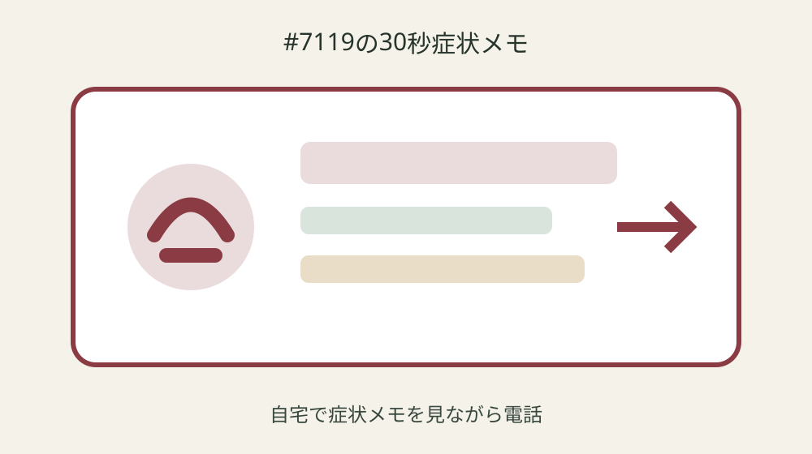
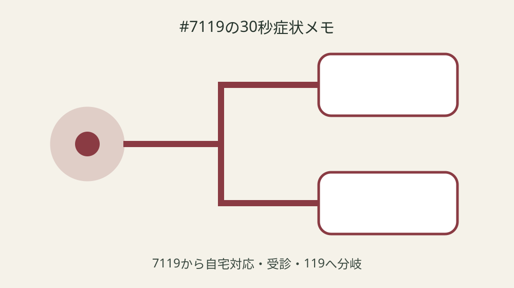

森町で#7119へ電話するとき｜症状・時刻・服薬を30秒で伝えるメモ

結論：救急相談30秒メモへ対象・基準日・手元資料・未確認事項を分け、最初の一問だけを森町へ確認します。静岡県の#7119は令和6年10月1日に開始を起点に、実行直前の再確認までを一続きにしてください。
反応と呼吸を見て119を先に分ける
反応と呼吸を見て119を先に分けるでは、まず「静岡県の#7119は令和6年10月1日に開始」という森町公式の条件を起点にします。救急相談30秒メモには対象、日付、資料名、確認日を別欄で置き、制度名だけのメモにしません。手元の現物と公式説明が食い違う場合は、都合のよい方へ寄せず、差がある状態をそのまま残します。
実際の確認は、現物を見る人、電話する人、記録する人を決めてから始めます。けがや病気の緊急度を助言も同じ行へ書き、重症時に相談を待つことを避けます。数字や固有名は読み上げて照合し、不明欄には推定値ではなく「未確認」と次の確認先を記します。 この判断も救急相談30秒メモの更新対象です。
森町へ尋ねるときは「反応と呼吸を見て119を先に分けるについて、手元ではここまで確認した」と一文で伝えます。そのうえで救急車利用について案内が自分の案件にどう当てはまるかを一問だけ確認します。回答日、担当部署、再確認が必要な時期まで記録すれば、家族や同僚が同じ質問を繰り返さずに済みます。 この判断も救急相談30秒メモの更新対象です。
救急相談30秒メモの更新では旧版を消しません。緊急・重症時は迷わず119番を採用した根拠、変更前の記載、変更した日を並べます。公式ページの更新や個別事情で結論が変わることがあるため、実行直前に最新案内を見直し、確認できない場合は作業を一段止めます。
症状が始まった時刻を書く
症状が始まった時刻を書くでは、まず「急な病気やけがで判断に迷うときの相談窓口」という森町公式の条件を起点にします。救急相談30秒メモには対象、日付、資料名、確認日を別欄で置き、制度名だけのメモにしません。手元の現物と公式説明が食い違う場合は、都合のよい方へ寄せず、差がある状態をそのまま残します。
実際の確認は、現物を見る人、電話する人、記録する人を決めてから始めます。対応方法を助言も同じ行へ書き、電話だけで診断が確定したと思うことを避けます。数字や固有名は読み上げて照合し、不明欄には推定値ではなく「未確認」と次の確認先を記します。 この判断も救急相談30秒メモの更新対象です。
森町へ尋ねるときは「症状が始まった時刻を書くについて、手元ではここまで確認した」と一文で伝えます。そのうえで他の相談窓口を紹介が自分の案件にどう当てはまるかを一問だけ確認します。回答日、担当部署、再確認が必要な時期まで記録すれば、家族や同僚が同じ質問を繰り返さずに済みます。 この判断も救急相談30秒メモの更新対象です。
救急相談30秒メモの更新では旧版を消しません。受付は24時間365日を採用した根拠、変更前の記載、変更した日を並べます。公式ページの更新や個別事情で結論が変わることがあるため、実行直前に最新案内を見直し、確認できない場合は作業を一段止めます。
最もつらい症状を一つ選ぶ
最もつらい症状を一つ選ぶでは、まず「相談員は看護師または医師」という森町公式の条件を起点にします。救急相談30秒メモには対象、日付、資料名、確認日を別欄で置き、制度名だけのメモにしません。手元の現物と公式説明が食い違う場合は、都合のよい方へ寄せず、差がある状態をそのまま残します。
実際の確認は、現物を見る人、電話する人、記録する人を決めてから始めます。受診可能な医療機関を案内も同じ行へ書き、受診先名を聞き間違えることを避けます。数字や固有名は読み上げて照合し、不明欄には推定値ではなく「未確認」と次の確認先を記します。 この判断も救急相談30秒メモの更新対象です。
森町へ尋ねるときは「最もつらい症状を一つ選ぶについて、手元ではここまで確認した」と一文で伝えます。そのうえで電話相談は判断の参考とするものが自分の案件にどう当てはまるかを一問だけ確認します。回答日、担当部署、再確認が必要な時期まで記録すれば、家族や同僚が同じ質問を繰り返さずに済みます。 この判断も救急相談30秒メモの更新対象です。
救急相談30秒メモの更新では旧版を消しません。子どもの相談には別の小児救急相談も案内されるを採用した根拠、変更前の記載、変更した日を並べます。公式ページの更新や個別事情で結論が変わることがあるため、実行直前に最新案内を見直し、確認できない場合は作業を一段止めます。
年齢・持病・妊娠可能性を揃える
年齢・持病・妊娠可能性を揃えるでは、まず「けがや病気の緊急度を助言」という森町公式の条件を起点にします。救急相談30秒メモには対象、日付、資料名、確認日を別欄で置き、制度名だけのメモにしません。手元の現物と公式説明が食い違う場合は、都合のよい方へ寄せず、差がある状態をそのまま残します。
実際の確認は、現物を見る人、電話する人、記録する人を決めてから始めます。救急車利用について案内も同じ行へ書き、重症時に相談を待つことを避けます。数字や固有名は読み上げて照合し、不明欄には推定値ではなく「未確認」と次の確認先を記します。 この判断も救急相談30秒メモの更新対象です。
森町へ尋ねるときは「年齢・持病・妊娠可能性を揃えるについて、手元ではここまで確認した」と一文で伝えます。そのうえで緊急・重症時は迷わず119番が自分の案件にどう当てはまるかを一問だけ確認します。回答日、担当部署、再確認が必要な時期まで記録すれば、家族や同僚が同じ質問を繰り返さずに済みます。 この判断も救急相談30秒メモの更新対象です。
救急相談30秒メモの更新では旧版を消しません。静岡県の#7119は令和6年10月1日に開始を採用した根拠、変更前の記載、変更した日を並べます。公式ページの更新や個別事情で結論が変わることがあるため、実行直前に最新案内を見直し、確認できない場合は作業を一段止めます。

服薬名とアレルギーを手元に置く
服薬名とアレルギーを手元に置くでは、まず「対応方法を助言」という森町公式の条件を起点にします。救急相談30秒メモには対象、日付、資料名、確認日を別欄で置き、制度名だけのメモにしません。手元の現物と公式説明が食い違う場合は、都合のよい方へ寄せず、差がある状態をそのまま残します。
実際の確認は、現物を見る人、電話する人、記録する人を決めてから始めます。他の相談窓口を紹介も同じ行へ書き、電話だけで診断が確定したと思うことを避けます。数字や固有名は読み上げて照合し、不明欄には推定値ではなく「未確認」と次の確認先を記します。 この判断も救急相談30秒メモの更新対象です。
森町へ尋ねるときは「服薬名とアレルギーを手元に置くについて、手元ではここまで確認した」と一文で伝えます。そのうえで受付は24時間365日が自分の案件にどう当てはまるかを一問だけ確認します。回答日、担当部署、再確認が必要な時期まで記録すれば、家族や同僚が同じ質問を繰り返さずに済みます。 この判断も救急相談30秒メモの更新対象です。
救急相談30秒メモの更新では旧版を消しません。急な病気やけがで判断に迷うときの相談窓口を採用した根拠、変更前の記載、変更した日を並べます。公式ページの更新や個別事情で結論が変わることがあるため、実行直前に最新案内を見直し、確認できない場合は作業を一段止めます。
体温・転倒場所等を推測せず伝える
体温・転倒場所等を推測せず伝えるでは、まず「受診可能な医療機関を案内」という森町公式の条件を起点にします。救急相談30秒メモには対象、日付、資料名、確認日を別欄で置き、制度名だけのメモにしません。手元の現物と公式説明が食い違う場合は、都合のよい方へ寄せず、差がある状態をそのまま残します。
実際の確認は、現物を見る人、電話する人、記録する人を決めてから始めます。電話相談は判断の参考とするものも同じ行へ書き、受診先名を聞き間違えることを避けます。数字や固有名は読み上げて照合し、不明欄には推定値ではなく「未確認」と次の確認先を記します。 この判断も救急相談30秒メモの更新対象です。
森町へ尋ねるときは「体温・転倒場所等を推測せず伝えるについて、手元ではここまで確認した」と一文で伝えます。そのうえで子どもの相談には別の小児救急相談も案内されるが自分の案件にどう当てはまるかを一問だけ確認します。回答日、担当部署、再確認が必要な時期まで記録すれば、家族や同僚が同じ質問を繰り返さずに済みます。 この判断も救急相談30秒メモの更新対象です。
救急相談30秒メモの更新では旧版を消しません。相談員は看護師または医師を採用した根拠、変更前の記載、変更した日を並べます。公式ページの更新や個別事情で結論が変わることがあるため、実行直前に最新案内を見直し、確認できない場合は作業を一段止めます。
相談員の助言と受診先を復唱する
相談員の助言と受診先を復唱するでは、まず「救急車利用について案内」という森町公式の条件を起点にします。救急相談30秒メモには対象、日付、資料名、確認日を別欄で置き、制度名だけのメモにしません。手元の現物と公式説明が食い違う場合は、都合のよい方へ寄せず、差がある状態をそのまま残します。
実際の確認は、現物を見る人、電話する人、記録する人を決めてから始めます。緊急・重症時は迷わず119番も同じ行へ書き、重症時に相談を待つことを避けます。数字や固有名は読み上げて照合し、不明欄には推定値ではなく「未確認」と次の確認先を記します。 この判断も救急相談30秒メモの更新対象です。
森町へ尋ねるときは「相談員の助言と受診先を復唱するについて、手元ではここまで確認した」と一文で伝えます。そのうえで静岡県の#7119は令和6年10月1日に開始が自分の案件にどう当てはまるかを一問だけ確認します。回答日、担当部署、再確認が必要な時期まで記録すれば、家族や同僚が同じ質問を繰り返さずに済みます。 この判断も救急相談30秒メモの更新対象です。
救急相談30秒メモの更新では旧版を消しません。けがや病気の緊急度を助言を採用した根拠、変更前の記載、変更した日を並べます。公式ページの更新や個別事情で結論が変わることがあるため、実行直前に最新案内を見直し、確認できない場合は作業を一段止めます。

悪化時の切替条件を家族で共有する
悪化時の切替条件を家族で共有するでは、まず「他の相談窓口を紹介」という森町公式の条件を起点にします。救急相談30秒メモには対象、日付、資料名、確認日を別欄で置き、制度名だけのメモにしません。手元の現物と公式説明が食い違う場合は、都合のよい方へ寄せず、差がある状態をそのまま残します。
実際の確認は、現物を見る人、電話する人、記録する人を決めてから始めます。受付は24時間365日も同じ行へ書き、電話だけで診断が確定したと思うことを避けます。数字や固有名は読み上げて照合し、不明欄には推定値ではなく「未確認」と次の確認先を記します。 この判断も救急相談30秒メモの更新対象です。
森町へ尋ねるときは「悪化時の切替条件を家族で共有するについて、手元ではここまで確認した」と一文で伝えます。そのうえで急な病気やけがで判断に迷うときの相談窓口が自分の案件にどう当てはまるかを一問だけ確認します。回答日、担当部署、再確認が必要な時期まで記録すれば、家族や同僚が同じ質問を繰り返さずに済みます。 この判断も救急相談30秒メモの更新対象です。
救急相談30秒メモの更新では旧版を消しません。対応方法を助言を採用した根拠、変更前の記載、変更した日を並べます。公式ページの更新や個別事情で結論が変わることがあるため、実行直前に最新案内を見直し、確認できない場合は作業を一段止めます。
良い点
救急相談30秒メモに確認済み事実と未確認事項を分けると、制度の対象外を恐れて何もしない状態から、次の一問を決める状態へ進めます。
相談員は看護師または医師という具体条件を家族で共有でき、担当が替わっても根拠をたどれます。
期限、現物、回答日が一枚に集まり、書類の取り直しと問い合わせの重複を減らせます。
公式資料だけで断定できない個別条件を未確認として残せることも、この方法の利点です。
注文したい点
森町の案内には制度条件が整理されていますが、初めて手続きをする人には、個別案件の順番が読み取りにくい部分があります。
重症時に相談を待つことを避けるため、記入例や受付後の流れも同じページから確認できるとさらに使いやすくなります。
年度更新時には変更箇所と変更日が目立つ表示になると、保存した旧資料との取り違えを減らせます。
これは現行制度の否定ではなく、利用者が正しい窓口へ一度で到達するための改善要望です。
対案・結論
結論は、救急相談30秒メモを今日一枚作り、最初の未確認欄だけを森町へ尋ねることです。
全条件を一度に覚えず、公式事実、手元資料、窓口回答、次の期限を四列に分けます。
対応方法を助言を確認しても、個別可否は案件ごとに変わり得るため、支出や申請の直前に再確認します。
確認が終わったら旧版を残し、次回の担当が同じ根拠から続けられる状態を完成とします。
大石の視点
ここまでの制度条件は森町公式資料から確認した事実です。以下は私、大石浩之の実務提案であり、森町の公式見解ではありません。
私は救急相談30秒メモを紙一枚から始め、原本を動かさず、写真や写しへ番号を付ける方法を勧めます。
未確認欄は失敗ではありません。確認先と期限のある空欄は、根拠のない推測より実用的です。
個人情報を含む場合は内部保管版と提出版を分け、必要な範囲だけを相手へ渡してください。
よくある質問
救急相談30秒メモは何から始めますか。
対象者または対象物、基準日、手元資料を一行にし、最初の公式条件「静岡県の#7119は令和6年10月1日に開始」と照合します。
資料が足りなくても救急相談30秒メモを作れますか。
作れます。不足欄を推測で埋めず、必要資料、確認先、期限を書けば、後から安全に再開できます。
公式ページを一度保存すれば十分ですか。
十分ではありません。急な病気やけがで判断に迷うときの相談窓口などの条件は更新される場合があるため、実行直前に現行ページを確認します。
家族や担当者へ渡すとき何を添えますか。
確認済み事実、未確認事項、次の担当、期限、原本保管場所、町へ尋ねた日と回答を添えます。
公式情報源
- 救急安心電話相談窓口#7119（2026年8月20日確認）
- 病気のとき（2026年8月20日確認）

最終確認日：2026-08-20 ／ 公表事実と執筆者の解釈・意見を分けて記載しています。